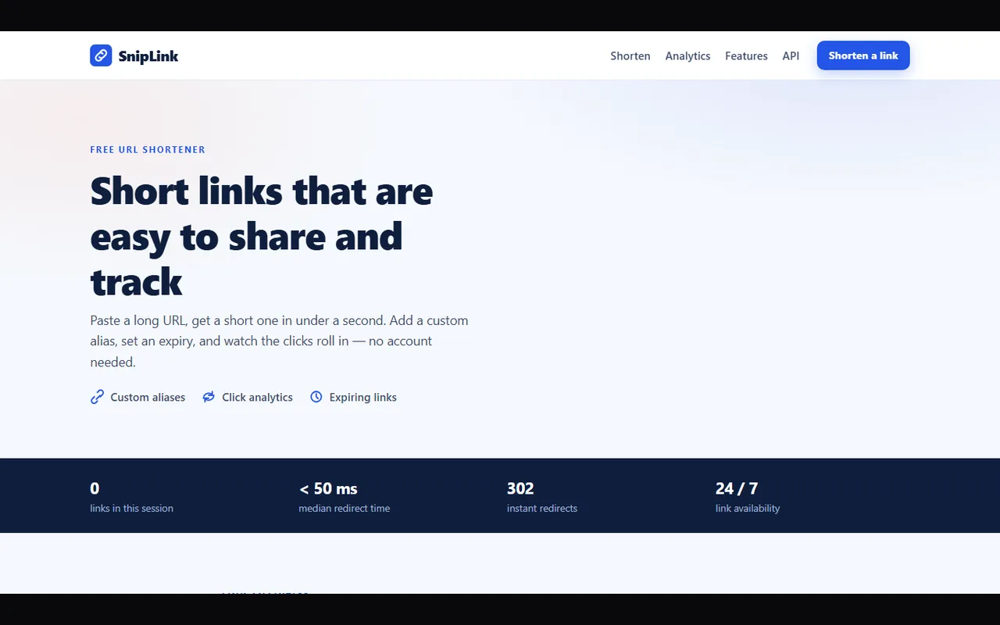
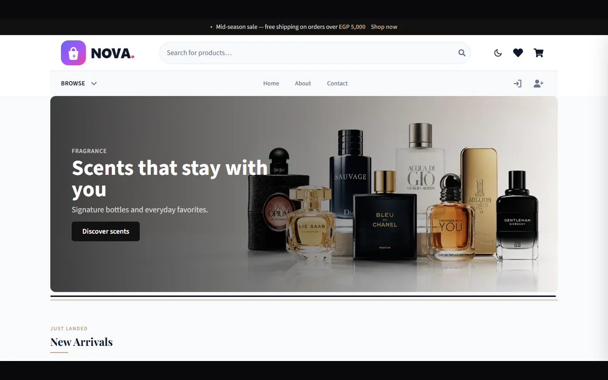
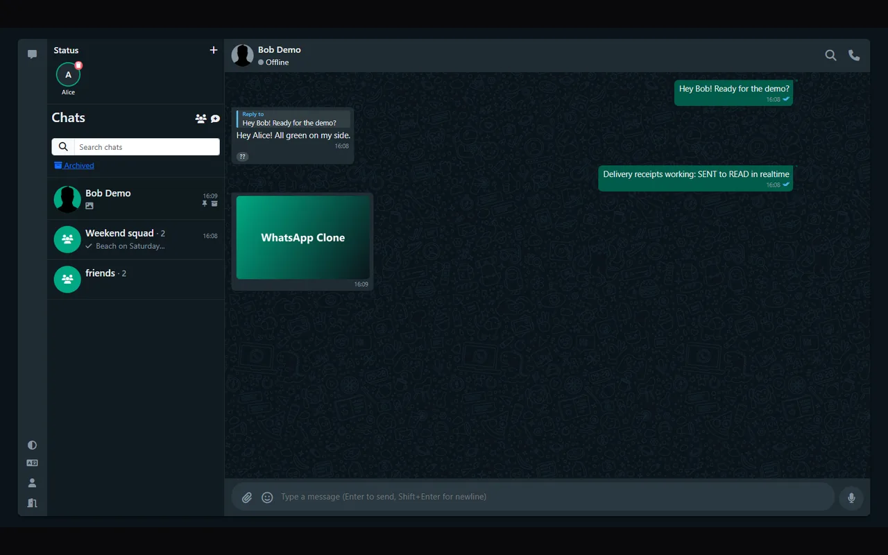
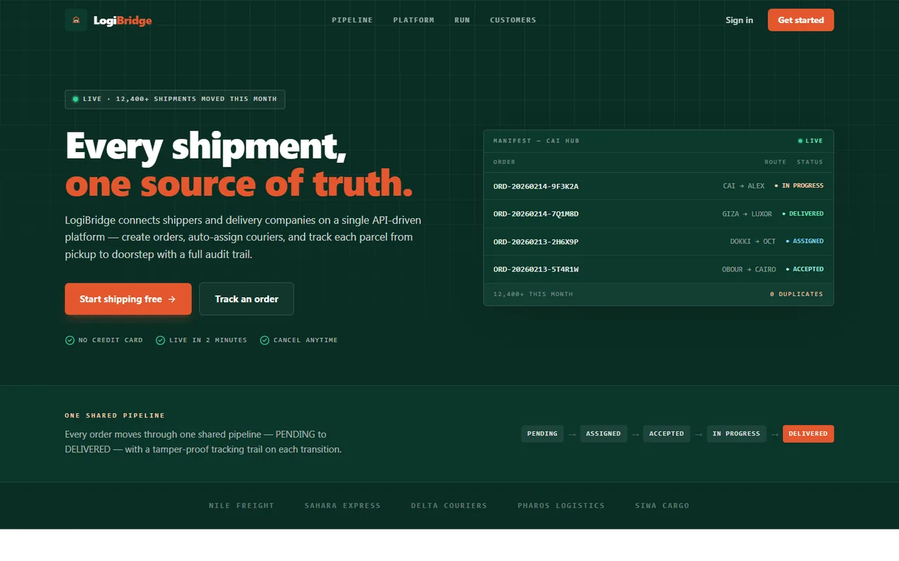
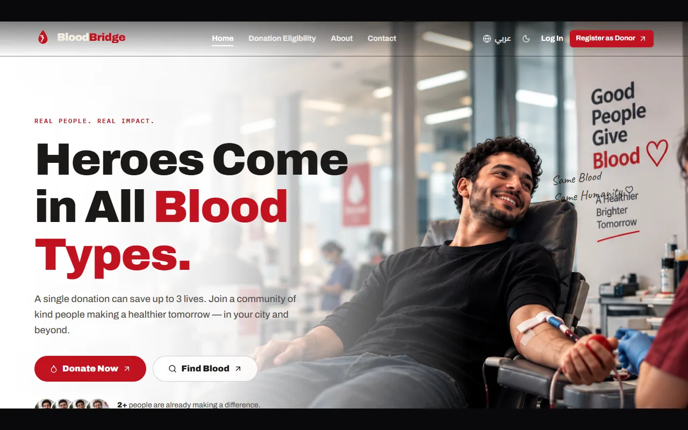
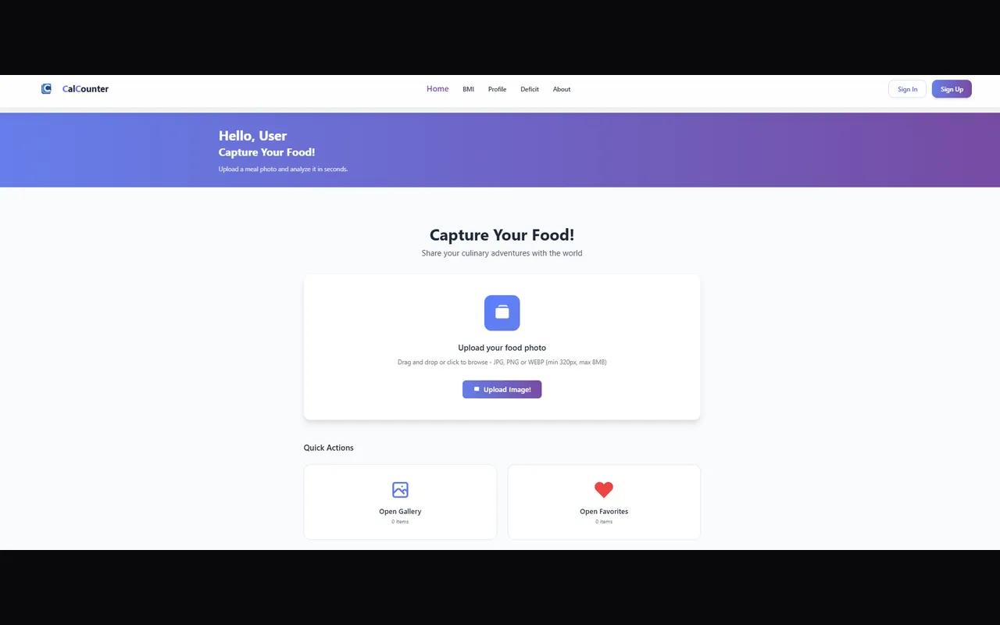
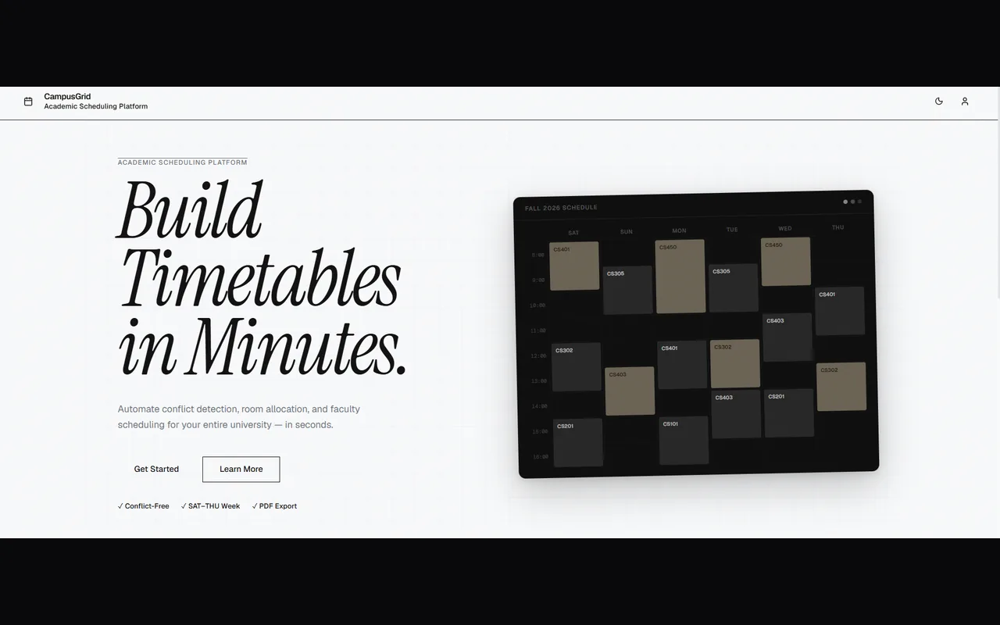
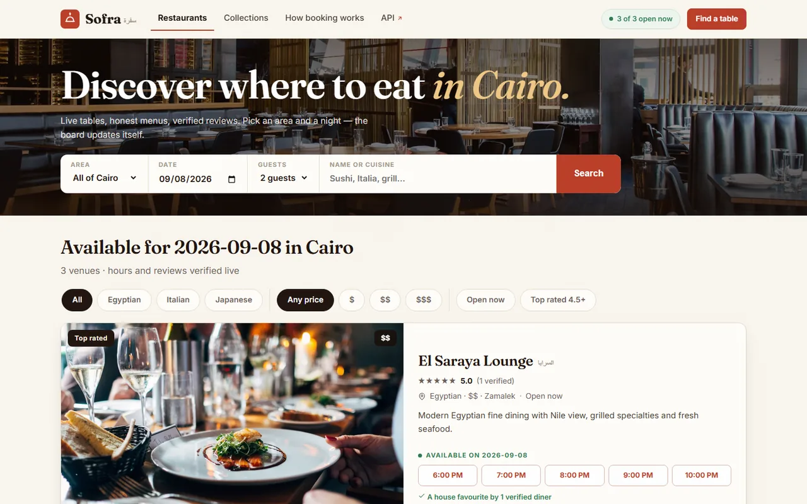
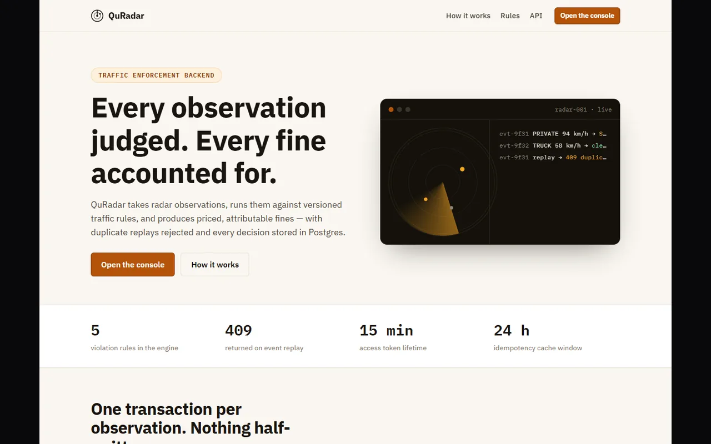

Featured Projects

Distributed URL Shortener
Production-oriented URL shortener with Java 21, Spring Boot 3, MySQL sharding, Redis, and Docker. Custom aliases, expiration, click stats, and Lua-based per-IP rate limiting.
hash(shortCode) % N routing · Base62 from Redis INCR · cache-aside with expiry-aware TTL

E-commerce Backend
Multi-tenant e-commerce backend with Java 21 and Spring Boot 3: catalog, cart, 15-min stock reservations, Stripe Checkout + verified webhooks, COD, double-entry accounting, and RBAC.
PESSIMISTIC_WRITE + retry ×3 · idempotent payments · tenant isolation · 112 tests

WhatsApp Clone — Realtime API
Realtime messaging with Spring Boot, WebSocket/STOMP, PostgreSQL, Redis presence, MinIO media, and Keycloak. Guarded SENT → DELIVERED → READ semantics and 84 tests.
session identity · cursor pagination · atomic unread counters · presigned media

LogiBridge — Delivery Integration Platform
Delivery workflow connecting companies and providers: assign, accept, track, deliver, cancel, with admin overrides. Idempotency, pessimistic + optimistic locking, and state-machine validation.
DB + Redis idempotency · immutable tracking · JWT rotation

BloodBridge — Donation Matching API
Urgent blood-request matching with progressive-radius search, QR-verified admission, optional ML scoring with rule fallback, and Outbox reliable events. 55 endpoints, 169 tests.
25km expansion · single-use QR · circuit breaker · org isolation

CalCounter — AI Nutrition Tracking
AI nutrition tracking: meal photos → async HuggingFace EfficientNetB3/Food-101 analysis, calorie estimation, meals, BMI, dashboards, and progress. Java 21, Boot 3.5, MySQL 8, Docker/Render.
@Async 202 + polling · retry · DailySummary recalculation

Time-Table — Academic Scheduler
University timetabling with Spring Boot 3.2 and a genetic algorithm (7 hard + 5 soft constraints), schedule lifecycle DRAFT → LOCKED, JWT roles, analytics, and PDF/Excel/PNG export.
tournament selection · async generation · React admin SPA

Sofra — Restaurant Reservations
Reservation platform with Spring Boot 3.3.5: table booking with conflict checks, approval workflow, live menu, auto invoices, verified reviews, JWT + refresh, Flyway V1–V6, 79 tests.
state machine · sliding-window rate limiting · Actuator

QuRadar — Traffic Rules API
Radar observations judged against versioned rules: priced, attributable fines pinned to rule versions, composite (device, event) idempotency, optimistic locking, Redis fail-open limits, audit trail.
Postgres 16 · Redis 24h idempotency · derived device health